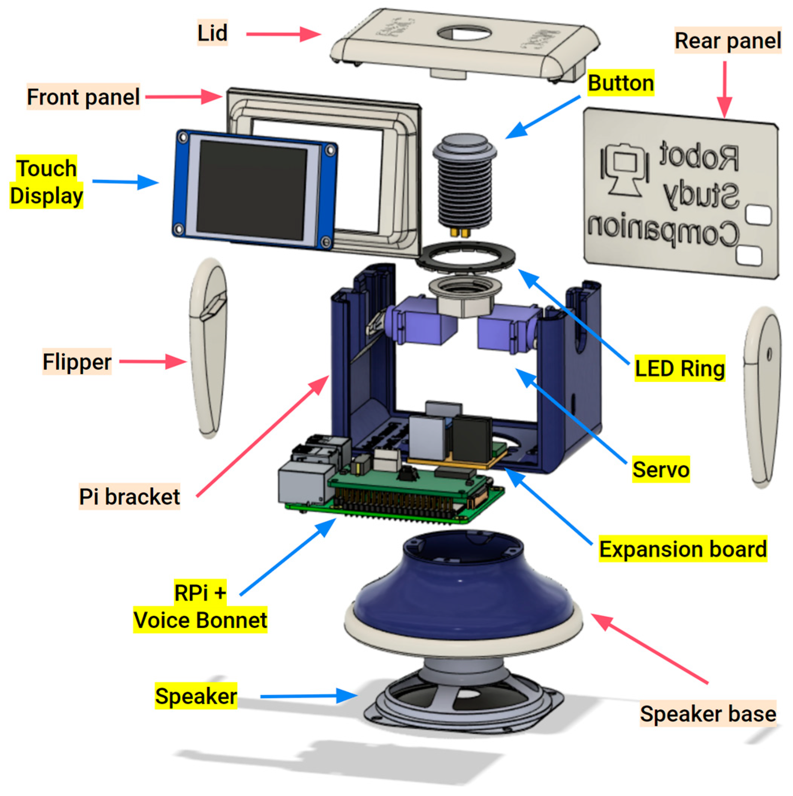

Please familiarise yourself with the components in the overview below:
This guide will walk you through each step of assembling the RSC v4.
Use the navigation buttons below to move through each of the assembly steps.
See video below for more details:
By the end of this step, you will have assembled the base of the RSC v4.
Make sure to carefully route the speaker wires through the round slot.
See video below for more details:
By the end of this step, you will have attached the Pi bracket to the base.
Prepare and insert your AIY flashed SD card to its slot on the Raspberry Pi
We recommend Raspberry Pi Imager (v1.7 or later) and enabling SSH and VNC for remote access.
See video below for more details:
By the end of this step, you have installed the Raspberry Pi in the RSC v4.
Align the Voice Bonnet HAT with your Expansion Board by matching connector orientation.
Gently press both together until fully seated.
By the end of this step, you have installed the Expansion Board to the Voice Bonnet HAT.
See video below for more details:
By the end of this step, the Voice Bonnet HAT is on the Raspberry Pi.
You will need a precision screwdriver for this step.
Make sure to keep the speaker wires from connecting to each other.
See video below for more details:
By the end of this step, you have connected your speaker to the Voice Bonnet HAT.
Use jumper wires to connect Expansion Board's Level Shifter for peripheral communication.
See video below for more details:
By the end of this step, you wired up your Expansion Board Level Shifter.
The motors should slide in the slot with some resistance, depending on the printed part tolerance.
See video below for more details:
By the end of this step, you installed both flippers.
Connect the motors to the three pin PWM header pins on the Expansion Board.
Make sure the ground (GND; black/brown wire) aligns with the GND pin on the header.
See video below for more details:
By the end of this step, you have installed both flippers of your RSC v4.
See video below for more details:
By the end of this step, you connected the display.
Ensure the connector cable remains accessible at the back for routing into the chassis.
Make sure the Display is flush with the frame opening.
See video below for more details:
By the end of this step, you fastened your display to the front panel.
Make sure the Front Panel is flush with the Pi bracket with no pinched wires.
See video below for more details:
By the end of this step, you installed the face of your RSC v4.
See video below for more details:
By the end of this step, you assembled the lid.
Note: Make sure to secure all connections and route wires carefully inside the chassis to help reduce interference when closing the lid.
See video below for more details:
By the end of this step, you connected the lid.
See video below for more details:
By the end of this step, you have fully assembled your RSC v4 😊🎉
Insert the Speaker into the Speaker Case, aligning it with the inner support ring. Then, place the Speaker Lid on top and press gently until it snaps into place. The lid is designed with a precision friction-fit grip, eliminating the need for screws while ensuring a secure hold.
Align the Pi Bracket with the upper section of the Speaker Unit, ensuring the speaker wires pass cleanly through the central opening. Gently rotate the Pi Bracket into position until it locks into the designed grooves.
Place the Raspberry Pi 4 onto the Pi Bracket, aligning the mounting holes with the standoffs. Secure it using 4 × M2×6 screws.
Ensure that the board is oriented so that the USB ports and microSD card slot align with their dedicated openings in the chassis.
Align the AIY Voice Bonnet with the GPIO header of the Raspberry Pi 4 and gently press it down until it is fully seated. Make sure all the pins are correctly aligned and inserted straight into the header to prevent bending or loose contact.
Align the RSC Expansion Board with the pin headers on the AIY Voice Bonnet, ensuring all pins match their respective sockets. Gently press the board down until it sits evenly on top of the bonnet. If the board doesn’t hold firmly in place, secure it with 1 × M2×6 screw at the mounting hole provided on the edge of the board. This will keep it stable and prevent loose contact during operation.
Insert the Speaker wires (red and black) into the terminal block on the AIY Voice Bonnet. Ensure the red wire goes into the positive (+) terminal and the black wire into the negative (–) terminal. Use a small screwdriver to gently tighten both screws, securing the wires firmly in place. Make sure there is no loose connection before continuing.
Use jumper wires to connect the RSC Expansion Board with the AIY Voice Bonnet as shown below. Ensure that each pin is connected correctly and the wire connections are firm.
Match the pins carefully as follows:
3.3V to 3.3V
TX to TXD
RX to TXD
PWM to PWM
Double-check that the orientation and wire colors match on both ends to prevent reversed connections.
Insert both Servo motors into their designated slots on the Main Chassis. Make sure the servo shafts face outward for proper flipper movement.
Once positioned, connect each servo cable to the PWM header on the Expansion Board, following the correct pin orientation:
Left Servo to PWM1 to Brown = GND, Red = 5V, Orange = Signal
Right Servo to PWM2 to Brown = GND, Red = 5V, Orange = Signal
Connect the other ends of the wires from the ESP32-2432S028 Display Pin to the RSC Expansion Board as follows: